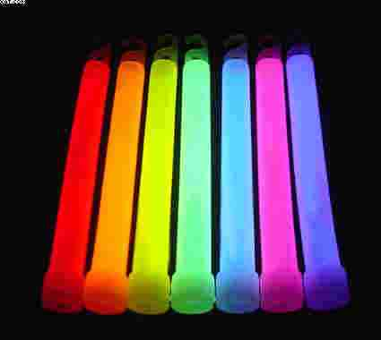

A molecule of analyte absorbs a photon and excites a species. The emission spectrum can provide qualitative and quantitative analysis. The term fluorescence and phosphorescence are usually referred as photoluminescence because both are alike in excitation brought by absorption of a photon. Fluorescence differs from phosphorescence in that the electronic energy transition that is responsible for fluorescence does not change in electron spin, which results in short-lived electrons (<10-5 s) in the excited state of fluorescence. In phosphorescence, there is a change in electron spin, which results in a longer lifetime of the excited state (second to minutes). Fluorescence and phosphorescence occurs at a longer wavelength than the excitation radiation.
Two electrons in an atom cannot have the same four quantum numbers and only two electrons can occupy each orbital where they must have opposite spin states. These opposite spin states are called spin pairing. Because of this spin pairing, most molecules do not exhibit a magnetic field and are diamagnetic. In diamagnetic molecules, electrons are not attracted or repelled by the static electric field. Free radicals are paramagnetic because they contain unpaired electrons have magnetic moments that are attracted to the magnetic field.
Requires: No excitation source (as does fluorescence and phosphorescence), only a single light detector such as a photomultiplier tube, no monochromator and often not even a filter.
